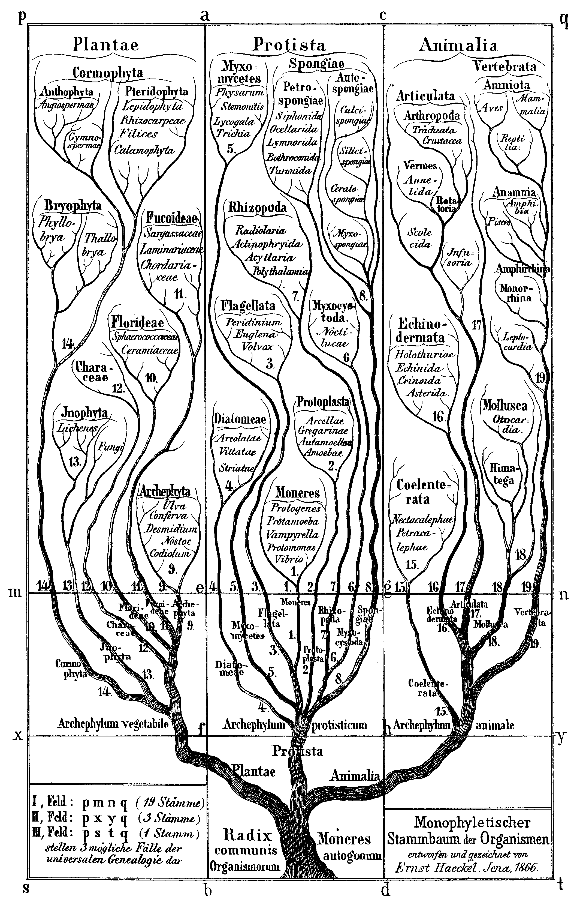

🦕 Evolution
3.8 billion years of life's journey — from single cells to human civilization


Life on Earth: A Timeline
4.5 billion years ago
Earth forms
Accretion of the solar nebula. Moon-forming impact. Hadean eon — hellish surface, constant bombardment.
3.8 billion years ago
First life (LUCA)
Last Universal Common Ancestor. Prokaryotic cells — no nucleus. Possibly RNA-based life in deep-sea hydrothermal vents.
3.5 billion years ago
Stromatolites
Layered mats of cyanobacteria in shallow seas. Oldest clear fossil evidence of life. Still exist in Shark Bay, Australia.
2.7 billion years ago
Great Oxygenation Event
Cyanobacteria photosynthesis floods atmosphere with oxygen. Toxic to most anaerobic life — a mass extinction. But enables aerobic life and eventually complex multicellular organisms.
2.1 billion years ago
Eukaryotes
Cells with a nucleus, mitochondria, and cytoskeleton. Lynn Margulis's endosymbiotic theory: mitochondria were engulfed bacteria.
1.2 billion years ago
Sexual reproduction
Meiosis and genetic recombination. Massively accelerates evolution by creating new gene combinations.
600 million years ago
Multicellular animals
Ediacaran fauna — soft-bodied multicellular organisms. No hard parts, but clear animal body plans.
541 million years ago
Cambrian Explosion
~20 million year burst of diversification. Most major animal body plans (phyla) appear. Trilobites, early chordates, arthropods, molluscs. Eyes evolve independently.
375 million years ago
Life on land
Tiktaalik — a transitional "fishapod" with limb-like fins. Plants colonized land 100 million years earlier. Vertebrates follow.
252 million years ago
Great Dying (P-Tr extinction)
Worst mass extinction — 96% of marine species, 70% of terrestrial vertebrates lost. Caused by Siberian Traps volcanic eruptions. Life nearly ended.
230 million years ago
Dinosaurs appear
After the Permian extinction, archosaurs diversify. Dinosaurs and crocodilians diverge. Mammals also appear as small, nocturnal creatures.
66 million years ago
K-Pg extinction (asteroid)
Chicxulub impactor (10 km diameter) hits Yucatán. Non-avian dinosaurs, 75% of all species extinct. Mammals and birds survive. Age of mammals begins.
6 million years ago
Human-chimp split
Hominid lineage diverges from Pan (chimps). Bipedalism evolves. African savanna environment drives selection for upright walking.
300,000 years ago
Homo sapiens
Modern humans appear in Africa. Jebel Irhoud fossils (Morocco). Behavioral modernity — abstract thought, language, art — follows.
70,000 years ago
Out of Africa
Homo sapiens migrate from Africa. Cognitive Revolution — explosion of symbolic behavior, art, complex tools. Colonize every continent within 60,000 years.
12,000 years ago
Agricultural Revolution
Domestication of wheat, rice, maize, cattle, dogs. Permanent settlements. Population explosion. Civilization begins.